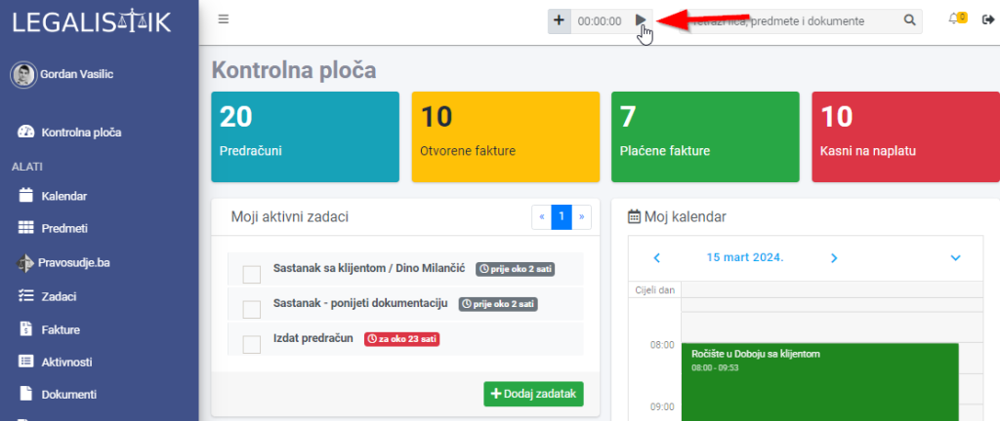
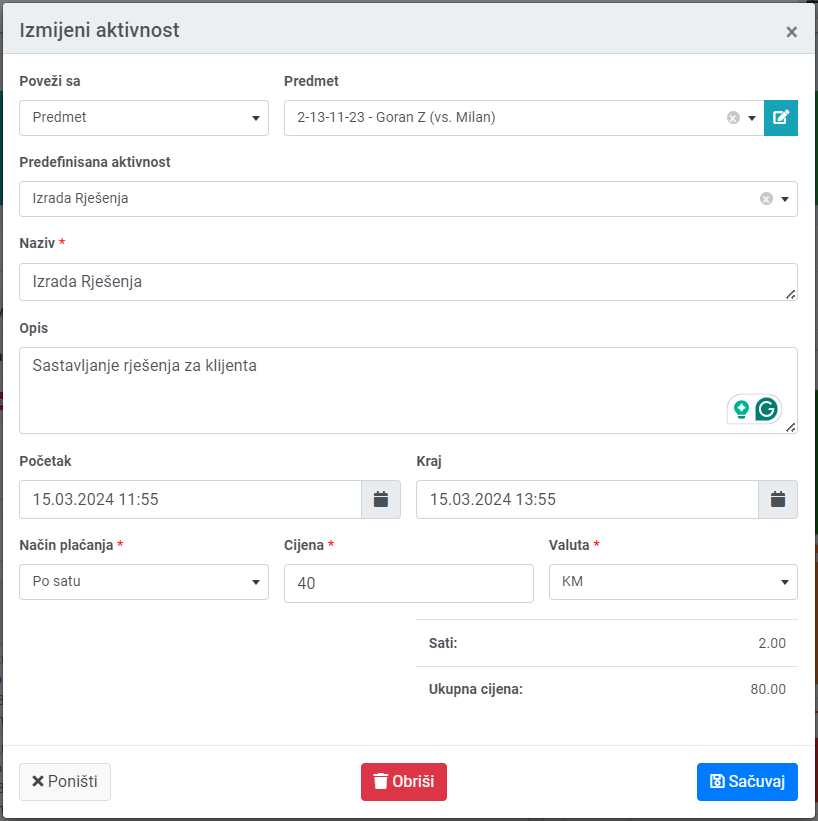
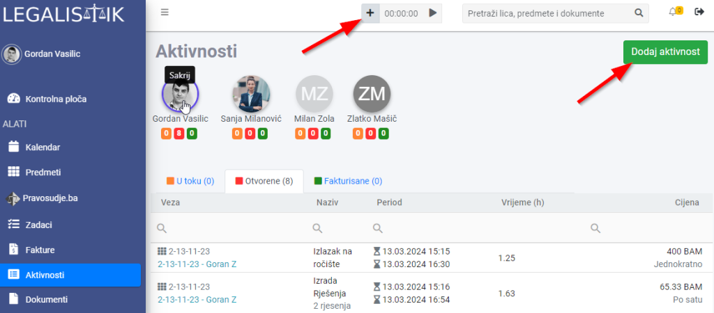
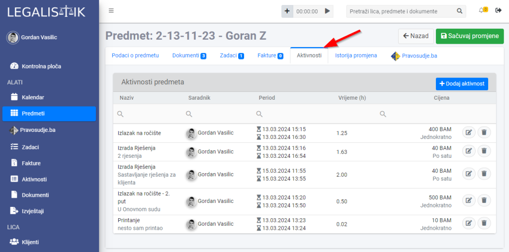

Aktivnosti je modul unutar Legalistika namijenjen za tačno praćenje utrošenog vremena na naplativim i nenaplativim aktivnostima. Aktivnost možete dodati koristeći mjerač vremena ili ručnim unosom utrošenog vremena.
Korištenje mjerača vremena za snimanje aktivnosti #
Da bi započeli snimanje utrošenog vremena, potrebno je pokrenuti mjerač vremena koji se nalazi na vrhu ekrana (vidljiv iz svih modula):

Kada završite započetu aktivnost, zaustavite mjerač vremena i otvoriće vam se se novi prozor u kojem je potrebno unijeti detalje aktivnosti:
- Poveži sa: Aktivnost možete povezati sa predmetom, klijentom ili da ostane nepovezana
- Predefinisana aktivnost: Izaberite vrstu aktivnosti koje ste prethodno dodali unutar Podešavanja->Vrste aktivnosti. Ako \elite da dodate nove vrste aktivnosti, pogledajte uputstvo ovdje.
- Naziv
- Opis
- Početak i kraj aktivnosti: Kalendari će biti podešeni na vrijeme pokretanja i zaustavljanja mjerača vremena, ali ih naravno ovdje možete izmjeniti.
- Način plaćanja: Da li aktivnost naplaćujete po satu ili je fiksna cijena
- Cijena
- Valuta: u kojoj valuti naplaćujete aktivnost

Broj sati i ukupna cijena vam se prikazuju na dnu forme. na Sačuvaj, vaša aktivnost se snima, i možete je pronaći u listi aktivnosti unutar modula Aktivnosti
Ručni unos utrošenog vremena #
U slučaju da već znate koliko ste vremena utrošili na određenu aktivnost, možete je ručno dodati tako što kliknete na plus ikonu sa lijeve strane mjerača vremena ili na dugme Dodaj aktivnost unutar modula Aktivnosti:

Nakon toga vam se otvara forma kao i kod korištenja mjerača vremena.
Pregled i dodavanje aktivnosti unutar predmeta #
Sve aktivnosti vezane za predmet se dodaju unutar predmeta, u kartici Aktivnosti:

Iznad te liste je i dugme Dodaj aktivnost, gdje dodajete aktivnost za taj predmet, na isti način kao i ručno dodavanje aktivnosti